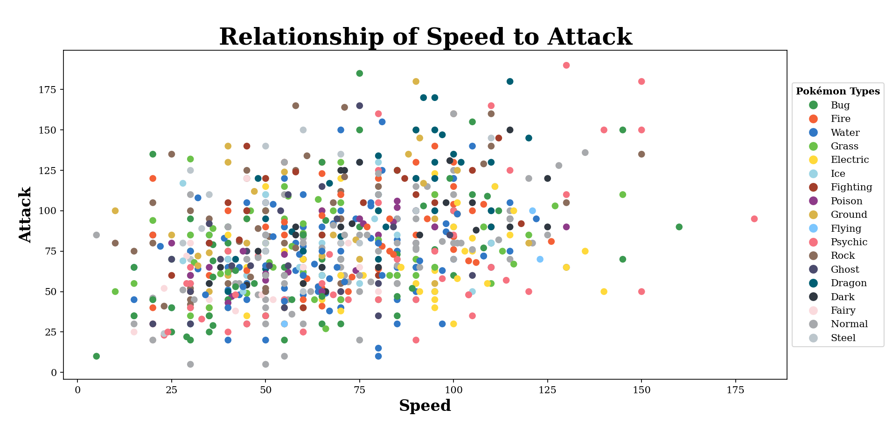

Python was created in the late 1980s by Guido van Rossum at Centrum Wiskunde & Informatica (CWI) in the Netherlands. It was officially released in 1991. The name "Python" was inspired not by the snake, but by the British comedy series Monty Python's Flying Circus.
Python was designed to be simple and readable, with a clean syntax that emphasizes ease of use. Its use of indentation to define code blocks is one of its most recognizable features. Over time, Python has become a powerful language used in fields such as web development, machine learning, automation, and education.
Its rich ecosystem of libraries and its welcoming community have helped make it one of the most popular programming languages in the world today.
Guido van Rossum
Basics of Python
Print Statements
The print() function is used to display text or results on the screen.
Example:print("Hello, world!")
Output: Hello, world!
Variables and Data Types
Variables store data values. Python automatically assigns a data type based on the value given.
Category
Type
Description
Text
str
Textual data, enclosed in quotes (e.g., "hello")
Numeric
int, float, complex
Whole numbers (int), decimals (float), or complex numbers (3+2j)
Sequence
list, tuple, range
Collections of items. Lists are editable, tuples are not, ranges are number sequences
Mapping
dict
Key-value pairs (e.g., {"name": "Sigma"})
Set
set, frozenset
Unordered collections of unique elements
Boolean
bool
True or False
Binary
bytes, bytearray, memoryview
Used to store binary data
None
NoneType
Represents a null or no value
Operators and Math Terms
Python includes arithmetic and comparison operators:
Matplotlib is used to create graphs and plots in Python. It is especially useful for data visualization in science, engineering, and data analysis. You can make line graphs, bar charts, scatter plots, and more.
Example: import matplotlib.pyplot as plt
import numpy as np
Here are some charts and graphs you can make with Matplotlib!

Scatter Plot
Turtle
The turtle module allows users to draw shapes and patterns by controlling a virtual "turtle" on screen. It's great for learning programming and visual creativity.
Example: import turtle
turtle = turtle.Turtle()
for i in range (0, 5):
turtle.right(72)
turtle.forward(50)
turtle.done()